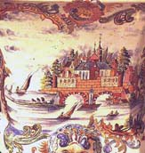

Delftware
uropean ceramics underwent a tremendous change in the 17th century. The technique of maiolica and its artisans had migrated to the Netherlands and Belgium from Italy around the 16th century. Following the capture of Antwerp by the Spanish, they settled in several Dutch cities, including Delft, whose ceramics were strongly influenced by the tin-glazing techniques those artists had brought with them, themselves heavily influenced by islamic techniques and motifs steeped in the maiolica tradition.
 But the development of Delft ceramics did not stop there, and underwent
yet again a radical change after coming into contact with far eastern ceramics.
Thanks to the activities of the Dutch East India Company in the early 17th C,
Chinese blue and white Wan-Li (1573-1619) porcelain began to appear in
Holland and was to make a profound impact on the local wares, resulting in the
well-known Dutch Blue and White style usually associted with Delft today. But
the local potters, steeped in the maiolica tradition, did not know how to make
porcelain, so they emulated the Chinese wares using their maiolica
techniques. Some of these maiolica copies are very difficult to distinguish
from their Chinese counterparts, except on areas where the terracotta clay could
be seen, eg. on the foot.
But the development of Delft ceramics did not stop there, and underwent
yet again a radical change after coming into contact with far eastern ceramics.
Thanks to the activities of the Dutch East India Company in the early 17th C,
Chinese blue and white Wan-Li (1573-1619) porcelain began to appear in
Holland and was to make a profound impact on the local wares, resulting in the
well-known Dutch Blue and White style usually associted with Delft today. But
the local potters, steeped in the maiolica tradition, did not know how to make
porcelain, so they emulated the Chinese wares using their maiolica
techniques. Some of these maiolica copies are very difficult to distinguish
from their Chinese counterparts, except on areas where the terracotta clay could
be seen, eg. on the foot.

Delft factories also began producing polychrome (multi-colored) ceramics, copying Chinese Kang-hsi and Japanese Imari wares. Often oriental and occidental motifs and forms would mingle, with tea caddies, teapots, vases and tiles being produced. Over the centuries, a wide range of Delft marks have accumulated, by which 'true' antique Delftware can be recognised. This rich Dutch tradition with its many influences continues on to this day, with the famous blue and white Delftware still being produced and heavily sought after.
If you're in Holland, drop by the city of Delft - a visit to that country would not be complete without it.
More Articles